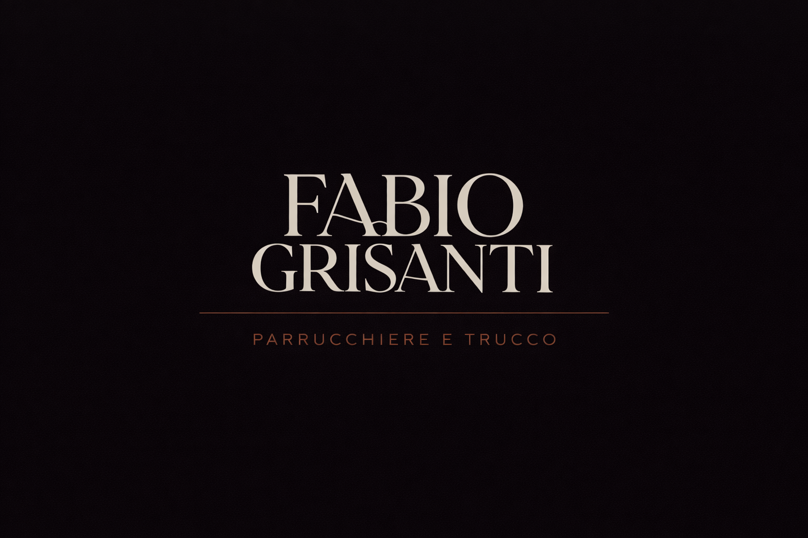
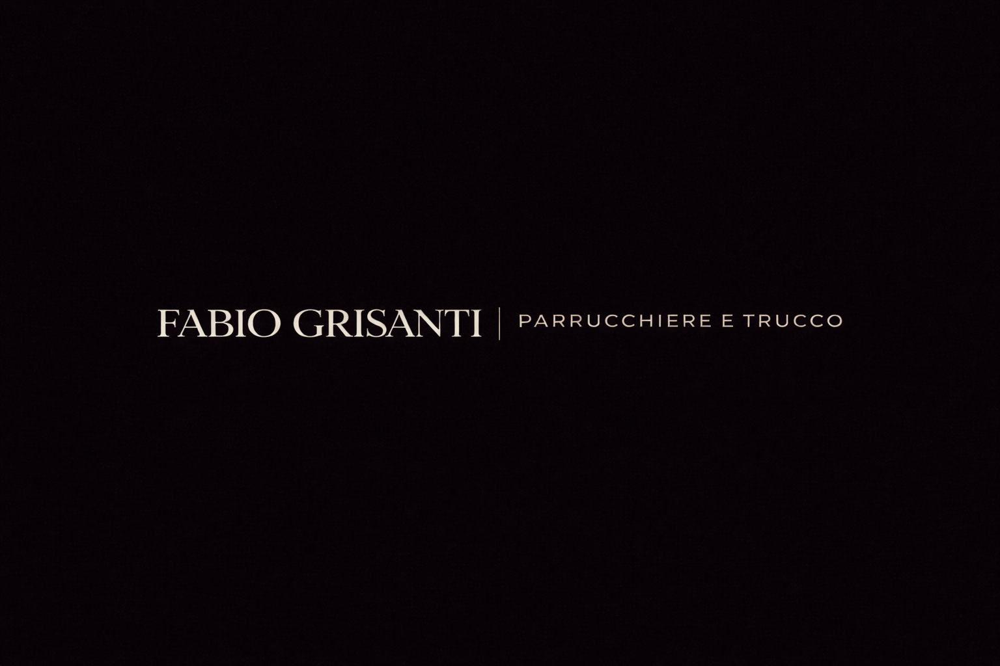
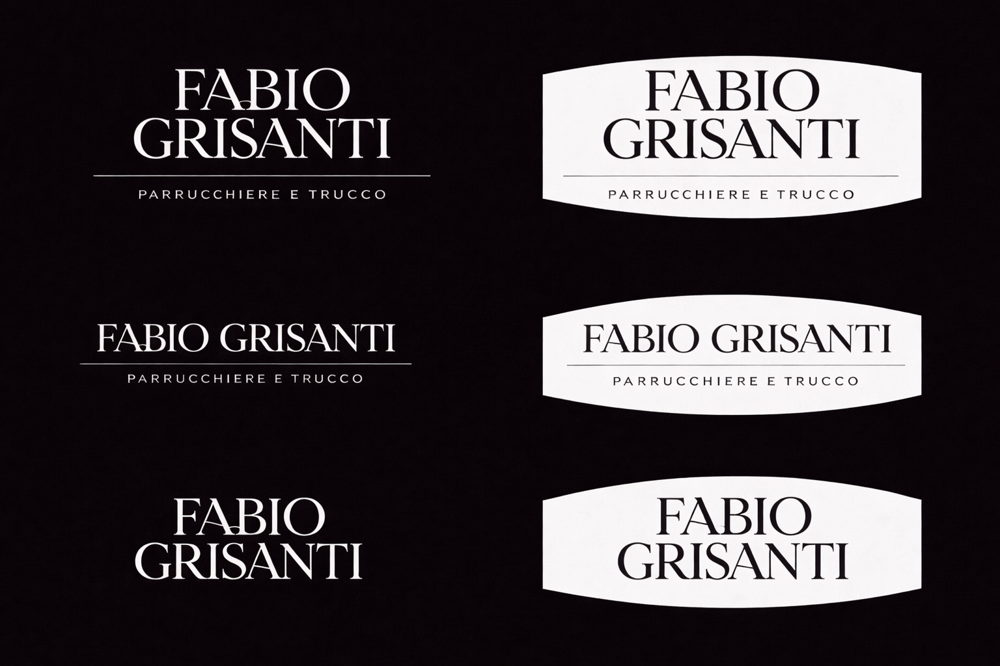
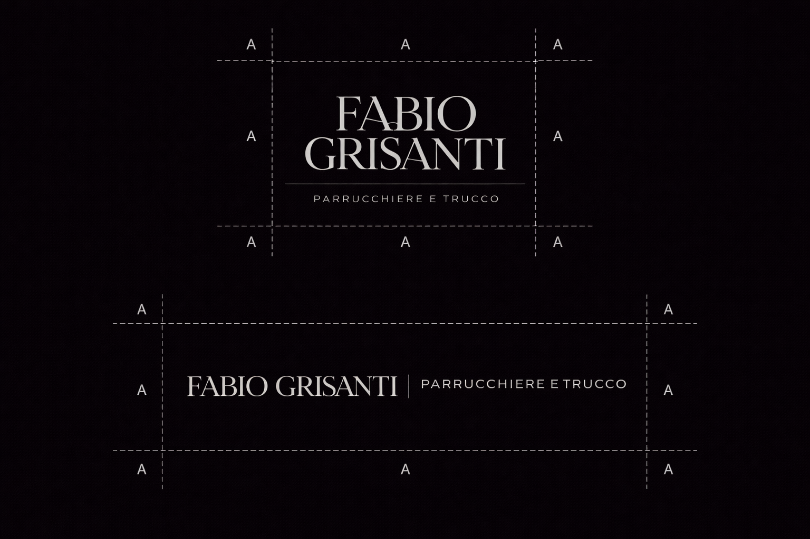
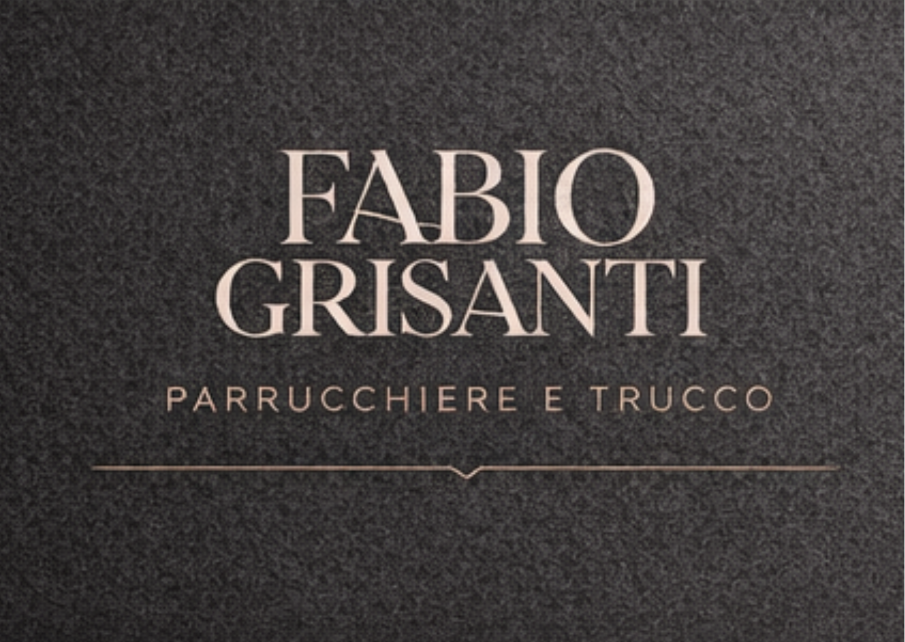
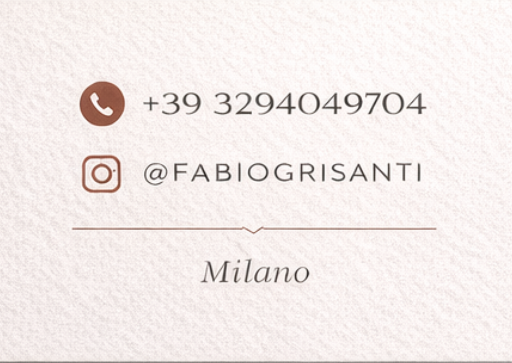

Brandbook
Fabio Grisanti
Parrucchieri e Trucco
Fundamentos da Marca
1.1 História da Marca
A marca Fábio Grisanti nasce da paixão pela arte e pela transformação. Há mais de 30 anos, ainda muito jovem, Fábio já demonstrava uma sensibilidade estética e inclinação natural para a criatividade. Sua principal inspiração foi sua tia, profissional da área da beleza, cuja dedicação e talento despertaram nele o desejo de seguir o mesmo caminho. O que começou como admiração tornou-se propósito. A vocação para transformar não apenas cabelos, mas a autoestima e a confiança das pessoas, foi o que impulsionou sua jornada.
Após construir uma trajetória sólida no Brasil, onde já possuía uma estrutura consolidada e uma clientela fiel, Fábio decidiu recomeçar na Itália há nove anos. Mais do que abrir um novo salão, o objetivo era criar algo maior: um espaço onde cada cliente pudesse viver uma experiência completa. A motivação nunca foi apenas oferecer um serviço, mas proporcionar atendimento personalizado, excelência técnica e momentos memoráveis — algo que nem sempre é possível ao atuar em salões de terceiros. Para Fábio, cabelo é técnica. Experiência é propósito.
A trajetória da marca é marcada por evolução constante. Fábio tornou-se cabeleireiro aos 17 anos, iniciando sua formação em uma escola simples no interior do Brasil. Após dois anos atuando em um salão de bairro, buscou crescimento profissional em um salão de grande porte, onde compreendeu a dinâmica de um negócio sólido. Com a consciência de que excelência exige preparo, investiu nas melhores academias do mundo:
- Academia Keune
- L’Oréal Professionnel
- Wella Professionals
- Schwarzkopf Professional
- Formação avançada (PhD em corte) com a metodologia Vidal Sassoon
- Acadèmia Llongueras
- Especialização europeia com formação de 3 anos
- Academia Tony & Guy
Essa busca incansável por conhecimento consolidou a marca como referência técnica e artística.
1.2 Propósito
A marca Fábio Grisanti existe para ir além do resultado. Seu propósito é proporcionar experiências memoráveis, elevando autoestima, confiança e identidade pessoal. Cada atendimento é pensado para ser único — não apenas um serviço, mas um momento especial. Além disso, a marca carrega o compromisso de compartilhar conhecimento, formando profissionais preparados não apenas para executar técnicas, mas para se posicionar com autoridade, corrigir erros e atuar com segurança e excelência.
1.3 Missão
Crescer de forma estruturada, mantendo a excelência técnica e disseminando a visão Fábio Grisanti, que se baseia em:
- Estudo contínuo: A busca por conhecimento é a base da evolução.
- Preparação constante: Estar sempre à frente das tendências e técnicas.
- Capacidade de solucionar: Habilidade para resolver qualquer desafio técnico com maestria.
- Atendimento humanizado e personalizado: Cada cliente é única e merece uma experiência exclusiva.
A missão é formar uma cultura de excelência dentro e fora do salão.
1.4 Valores
- Empatia: Colocar-se no lugar de cada cliente para entender suas verdadeiras necessidades e desejos.
- Disponibilidade: Estar presente e acessível para orientar e apoiar em qualquer eventualidade.
- Honestidade: Transparência absoluta em diagnósticos, processos e recomendações.
- Confiança: Construir relacionamentos sólidos e duradouros baseados no respeito e na segurança.
- Segurança: Garantir que cada cliente se sinta acolhida, compreendida e segura em cada etapa da sua transformação.
Posicionamento da Marca
2.1 Público-Alvo
Mulheres adultas (30+), de classe social média-alta a alta. A cliente Fábio Grisanti valoriza qualidade, sofisticação e cuidado pessoal. Ela entende que imagem é posicionamento. Vive uma rotina dinâmica, conciliando carreira, vida social e responsabilidades pessoais. Preza por ambientes organizados, elegantes e profissionais. Investe em si mesma — não por vaidade superficial, mas por autoestima e segurança. Valoriza marcas que entregam experiência, não apenas serviço. Busca praticidade, mas não abre mão da excelência. Acompanha tendências, mas prioriza o que combina com sua identidade. Ela não busca apenas “fazer o cabelo”. Ela busca sentir-se representada, segura e valorizada.
Necessidades e Desejos
Necessidades
- Segurança técnica antes de qualquer procedimento.
- Diagnóstico profissional personalizado.
- Correção de erros técnicos anteriores.
- Orientação clara sobre o que valoriza seu perfil.
- Resultados duradouros e saudáveis.
- Transparência e honestidade no atendimento.
- Pontualidade e respeito pelo seu tempo.
Desejos
- Sentir-se mais confiante e elegante.
- Ter um visual que reflita sua personalidade.
- Viver uma experiência diferenciada no salão.
- Ser atendida por um profissional de alto nível.
- Sentir-se exclusiva e bem cuidada.
- Receber elogios pelo cabelo.
- Manter um padrão elevado de imagem pessoal.
2.2 Persona: Camila Rossi
- Idade: 20 – 48 anos
- Profissão: Empresária, profissional liberal ou gestora.
- Localização: Itália (principalmente brasileiras ou mulheres que valorizam atendimento personalizado).
- Perfil: Camila é uma mulher independente, exigente e consciente da sua imagem. Ela entende que sua aparência comunica autoridade, elegância e posicionamento. Possui rotina intensa, agenda organizada e pouco tempo disponível. Não escolhe um salão pelo preço — escolhe pela confiança. Já teve experiências negativas e hoje valoriza profissionais altamente qualificados. Prefere pagar mais para ter segurança do que economizar e correr riscos.
- O que valoriza: Atendimento exclusivo, profissional com formação internacional, ambiente sofisticado, diagnóstico honesto e resultados previsíveis de alto padrão.
- O que não tolera: Amadorismo, atrasos, promessas irreais, falta de escuta e atendimento impessoal.
2.3 Problemas que a Marca Resolve
- Falta de confiança no profissional: Resolvido com diagnóstico técnico preciso, segurança profissional e domínio avançado de técnicas internacionais.
- Resultados frustrantes ou erros técnicos anteriores: Resolvido através de alto nível técnico, formação europeia e expertise em correção e reconstrução capilar.
- Atendimento impessoal e mecanizado: Resolvido com uma experiência personalizada, escuta ativa e acompanhamento individual.
- Falta de orientação profissional: Resolvido através de consultoria visagista e direcionamento estratégico de imagem.
- Insegurança com mudanças: Resolvido com planejamento visual consciente, transições seguras e comunicação clara.
- Danos capilares por procedimentos mal realizados: Resolvido com diagnóstico técnico, protocolos seguros e uso de marcas profissionais reconhecidas.
- Falta de experiência premium: Resolvido com um ambiente sofisticado, atendimento exclusivo e uma experiência memorável.
2.4 Diferencial Competitivo
A marca Fábio Grisanti não compete por preço. Compete por autoridade, experiência e excelência técnica. O que a torna única:
- Formação Internacional de Alto Nível: Academias renomadas mundialmente e especialização europeia.
- Capacidade Técnica para Correção de Erros: Não apenas executa — resolve problemas complexos que outros não conseguem.
- Experiência Personalizada: Cada cliente é atendida com diagnóstico individual e plano estratégico.
- Posicionamento Premium: Não é apenas um salão. É uma experiência de transformação.
- Mentalidade de Estudo Contínuo: Atualização constante com tendências e técnicas internacionais.
2.5 Concorrentes
Concorrentes Diretos
- Salões locais na mesma região com posicionamento similar.
- Cabeleireiros independentes de alto padrão.
- Profissionais brasileiros que atuam na Itália com foco em qualidade.
Concorrentes Indiretos
- Grandes redes de salão focadas em volume.
- Profissionais especializados apenas em preço competitivo.
- Salões que não investem na experiência do cliente.
Personalidade e Comunicação
3.1 Personalidade da Marca
A marca Fábio Grisanti combina autoridade técnica com sensibilidade artística. Ela é:
- Sofisticada: Transmite elegância, cuidado estético e um padrão elevado em todos os pontos de contato.
- Segura: Demonstra domínio técnico e confiança em cada diagnóstico, transmitindo tranquilidade à cliente.
- Moderna: Atualizada com tendências internacionais e técnicas contemporâneas, sem perder a atemporalidade.
- Exigente: Busca a excelência em cada detalhe — do atendimento ao resultado final.
- Inspiradora: Estimula a autoestima, a confiança e a evolução pessoal através da imagem.
- Humana: Apesar do posicionamento premium, mantém a proximidade, a escuta ativa e a empatia.
3.2 Arquétipo da Marca
A estratégia arquetípica da marca é uma fusão que a posiciona como uma autoridade criativa:
- O Mentor: Ensina, orienta, corrige e prepara. É a base da confiança, da segurança técnica e do compartilhamento de conhecimento.
- O Artista (Criador): Cria, transforma e valoriza a identidade. É a fonte da inovação, da estética e da expressão individual.
3.3 Tom de Voz
A comunicação deve refletir profissionalismo e exclusividade. O tom é semi-formal sofisticado: próximo com elegância, técnico com clareza.
Estilo Predominante
- Inspirador
- Educativo
- Confiante
- Elegante
Nunca Utilizar
- Gírias ou linguagem excessivamente coloquial.
- Excesso de emojis ou comunicação infantilizada.
- Tom apelativo ou sensacionalista.
- Comunicação focada em promoções agressivas.
3.4 Exemplos de Comunicação
Frases Padrão da Marca
“Beleza é técnica, mas também é identidade.”
“Cada cabelo tem uma história. Nosso papel é valorizá-la.”
“Excelência não é opcional. É o nosso padrão.”
Forma de Responder Clientes
Errado (comum no mercado):
“Pode vir tal dia, o valor é X.”
Padrão Fábio Grisanti:
“Será um prazer cuidar de você. Para indicar o melhor procedimento e garantir um resultado de excelência, preciso entender seu histórico capilar. Pode me contar um pouco sobre os últimos processos que realizou? Trabalhamos com diagnóstico personalizado para garantir sua segurança e um resultado de alto padrão.”
Identidade Visual
4.1 Logotipo

Versão Principal

Versão Secundária
Versão Reduzida

Versão Monocromática
Área de Proteção e Redução Mínima
Área de Proteção

Deve-se manter uma área livre ao redor do logotipo, equivalente à altura da letra “F” do nome “Fabio”. Este espaço garante que nenhum outro elemento visual interfira em sua legibilidade e destaque.
Redução Mínima
Para garantir a legibilidade, o logotipo não deve ser reproduzido em tamanhos menores que os especificados abaixo:
- Uso Digital: 150 pixels de largura
- Uso Impresso: 25 milímetros de largura
Regras de Uso do Logotipo
Usos Corretos
- Utilizar sempre as cores oficiais da marca.
- Manter as proporções e a estrutura original.
- Garantir boa legibilidade e contraste com o fundo.
- Utilizar apenas as versões oficiais fornecidas.
- Respeitar a área de proteção.
Usos Proibidos
- Alterar as cores do logotipo.
- Esticar, deformar ou girar o logotipo.
- Trocar a tipografia original.
- Adicionar efeitos como sombra, brilho ou contorno.
- Aplicar sobre fundos que dificultem a leitura.
- Utilizar imagens de baixa qualidade ou resolução.
4.2 Cores da Marca
Cores Principais
| Amostra | Nome | HEX | RGB | CMYK |
|---|---|---|---|---|
| Preto Profundo | #0F0F0F | 15, 15, 15 | 75, 68, 67, 90 | |
| Marfim Quente | #F3EFEA | 243, 239, 234 | 5, 5, 8, 0 | |
| Terracota Sofisticado | #B65A3C | 182, 90, 60 | 22, 72, 83, 13 | |
| Cinza Quente | #6F6A66 | 111, 106, 102 | 49, 49, 51, 52 |
Cores Secundárias
| Amostra | Nome | HEX | RGB | CMYK |
|---|---|---|---|---|
| Verde Oliva Elegante | #8A8F7A | 138, 143, 122 | 43, 31, 48, 10 | |
| Marrom Café Suave | #4A3F39 | 74, 63, 57 | 53, 60, 64, 67 | |
| Nude Rosado Sofisticado | #D6B8A8 | 214, 184, 168 | 14, 27, 30, 0 | |
| Cinza Claro Neutro | #C9C4BF | 201, 196, 191 | 20, 20, 22, 0 |
4.3 Tipografia
Fontes Principais (Títulos e Destaques)
Playfair Display
0123456789
Cinzel
0123456789
Fontes Secundárias (Textos Corridos e Suporte)
Montserrat
0123456789
Hierarquia de Textos
- Títulos (H1): Playfair Display, Bold, Caixa Alta ou Sentença. Cor principal ou Terracota.
- Subtítulos (H2): Playfair Display ou Cinzel, Regular. Cor principal.
- Textos Corridos (P): Montserrat ou Lato, Regular/Light. Priorizar legibilidade. Cor Cinza Quente ou Preto Profundo.
- Destaques e Chamadas: Montserrat, Bold ou Medium. Usar com moderação para ênfase.
Aplicações da Marca
5.1 Papelaria Institucional
As aplicações impressas devem refletir o posicionamento premium da marca, mantendo minimalismo, sofisticação e equilíbrio visual. A utilização correta das cores, tipografia e proporções do logotipo é obrigatória em todos os materiais institucionais.

Cartão de Visita – Frente

Cartão de Visita – Verso
Diretrizes para Impressão
- Utilizar papel de alta gramatura (mínimo 300g para cartões).
- Preferência por acabamento fosco ou soft touch.
- Aplicações em hot stamping terracota ou relevo seco são recomendadas.
- Respeitar margens de segurança e área de proteção do logotipo.
5.2 Aplicações Digitais
No ambiente digital, a marca deve manter consistência visual, clareza tipográfica e equilíbrio cromático. As aplicações devem transmitir sofisticação, organização e autoridade técnica.

Post Institucional – Instagram

Story – Instagram

Layout Website

Perfil WhatsApp Business
Diretrizes Digitais
- Manter predominância das cores principais.
- Evitar excesso de elementos visuais.
- Priorizar tipografia elegante e legível.
- Fotografias devem possuir iluminação profissional.
- Aplicar sempre o logotipo em alta resolução.
5.3 Ambientação e Experiência Física
A ambientação do espaço físico é uma extensão direta da identidade visual. O ambiente deve refletir elegância, organização e exclusividade, criando uma experiência sensorial alinhada ao posicionamento premium.

Fachada

Interior e Ambientação

Uniforme Profissional
Diretrizes de Ambientação
- Uso predominante das cores Preto, Marfim e Terracota.
- Materiais nobres como madeira, metal escovado e vidro.
- Iluminação quente e direcionada para valorização do ambiente.
- Organização impecável e ausência de poluição visual.
Diretrizes para Redes Sociais
6.1 Estilo Visual
- Layout: Composições limpas, elegantes e minimalistas. O espaço em branco é um elemento de sofisticação.
- Cores: Priorizar a paleta principal (Preto, Marfim, Terracota, Cinza). As cores secundárias devem ser usadas como pontos de destaque.
- Fotografia: Imagens de alta qualidade, com iluminação profissional, que transmitam a sofisticação do ambiente e a excelência dos resultados.
- Tipografia: Manter a hierarquia tipográfica definida, garantindo legibilidade e consistência.
6.2 Linguagem e Tom de Voz
- Forma de falar: Profissional, acolhedora e elegante. Tratar os seguidores com respeito e proximidade, sem perder a postura de autoridade.
- Conteúdo: Foco em educar, inspirar e demonstrar a expertise da marca. Evitar comunicação puramente promocional.
- Interação: Responder comentários e mensagens de forma personalizada, aplicando os princípios de atendimento da marca.
6.3 Tipos de Conteúdo Permitidos
- Educativo: Dicas de cuidados, explicação de técnicas, desmistificação de procedimentos, tendências de beleza analisadas por um especialista.
- Institucional: História da marca, valores, apresentação da equipe, bastidores que mostram o cuidado e a excelência.
- Resultados: Antes e depois de alta qualidade, focados na transformação e na satisfação da cliente (com autorização prévia).
- Experiência: Vídeos e fotos que capturem a atmosfera do salão e a experiência premium oferecida.
Experiência da Marca
7.1 Atendimento ao Cliente
O padrão de atendimento é um pilar da marca. Cada interação deve refletir nossos valores de empatia, segurança e excelência.
- Recepção: O cliente deve ser recebido de forma cordial e atenciosa, pelo nome sempre que possível. O ambiente deve ser acolhedor desde o primeiro momento.
- Diagnóstico: A escuta ativa é fundamental. O profissional deve primeiro ouvir as dores e desejos do cliente antes de propor qualquer solução.
- Execução: Durante o serviço, a comunicação deve ser clara, explicando os passos e garantindo o conforto e a segurança do cliente.
- Finalização: A entrega vai além do resultado. Inclui orientações de cuidados pós-serviço e a garantia de disponibilidade para qualquer dúvida.
7.2 Jornada do Cliente
A experiência deve ser memorável em todas as etapas.
- Antes do Atendimento: Processo de agendamento fácil e profissional. Comunicação clara e confirmação do serviço.
- Durante o Atendimento: Um ambiente sofisticado, limpo e confortável. Atendimento personalizado, atenção aos detalhes (uma bebida, uma revista de qualidade) e a sensação de ser o foco principal.
- Após o Atendimento: Acompanhamento para garantir a satisfação, orientações para manutenção do resultado e construção de um relacionamento de longo prazo.
Manifesto da Marca
Acreditamos que a beleza é uma forma de expressão pessoal e identidade. Valorizamos cada detalhe, cada transformação e cada história que passa pelo nosso espaço. Nosso compromisso é oferecer mais do que serviços de beleza, proporcionando experiências que elevam a autoestima, despertam confiança e celebram a individualidade. Criamos, cuidamos e transformamos com dedicação, técnica e sensibilidade, respeitando a essência de cada cliente e reforçando sua melhor versão. Porque beleza não é apenas aparência, é sentimento, expressão e identidade.